Le Sanctuaire des Brumes
Une nuit de pleine lune, la brume a recouvert le Parc Zoologique & Botanique de Mulhouse. Isabelle, soigneuse, a disparu près de l'enclos des loups.
Vous êtes l'enquêteur chargé de l'affaire. Pendant l'opération, les joueurs ont parcouru tout le parc de borne en borne, en scannant des QR codes. Ici, un simple bouton vous mène d'une étape à l'autre.
Environ 15 minutes. Montez le son.
Le commissaire Jean, votre supérieur
Greg, agent technique, pas très rassurant
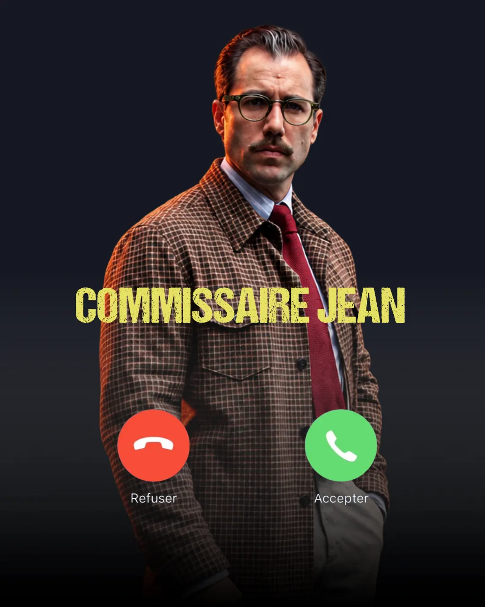
Commissaire Jean, dubitatif
Vous avez un appel entrant du commissaire Jean.
Le commissaire vous a envoyé 4 images.

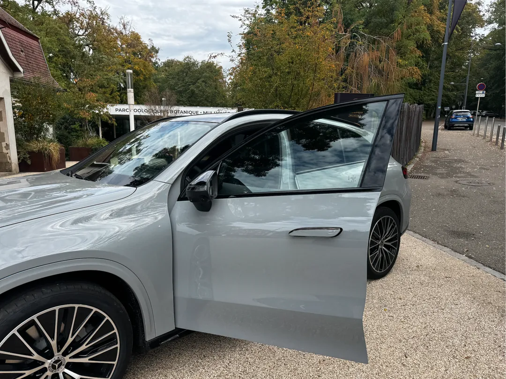
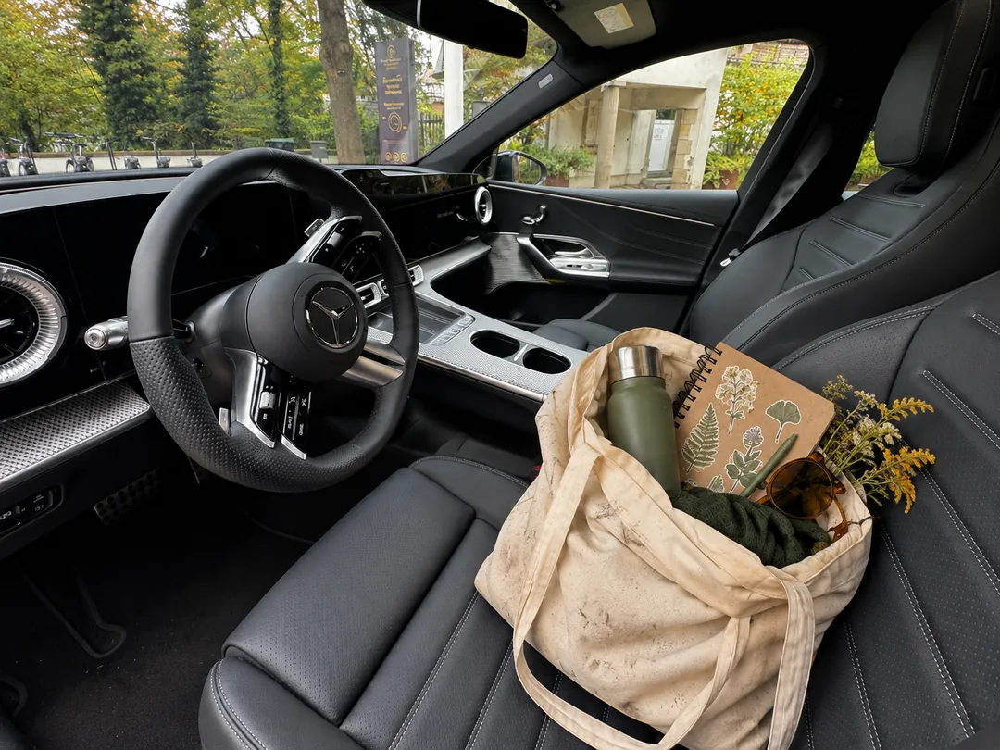
Vous venez de tomber sur un sac qui ne semble pas être à sa place. Faites défiler son contenu.
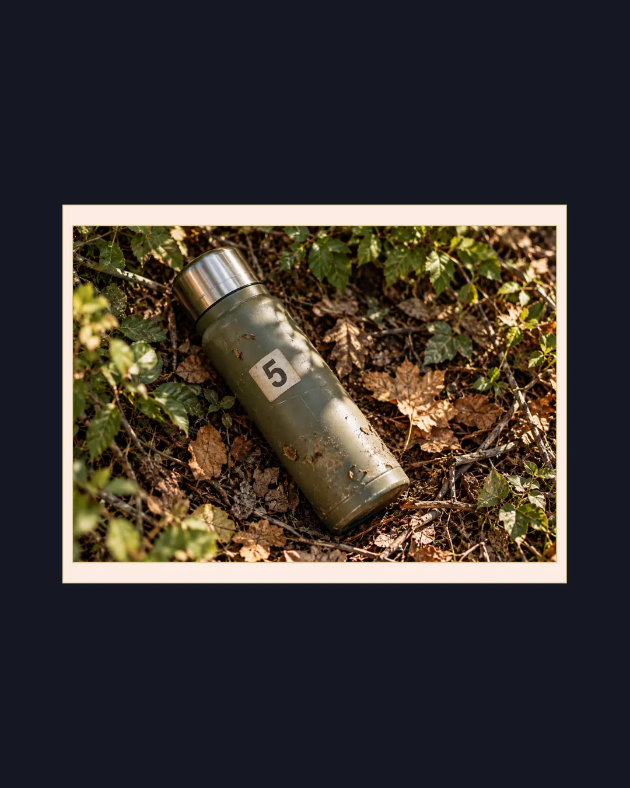
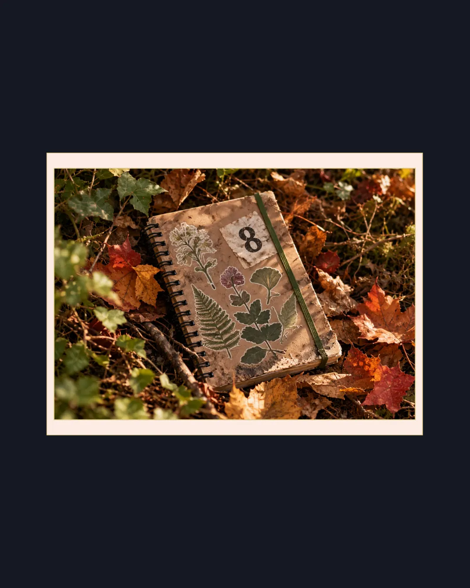
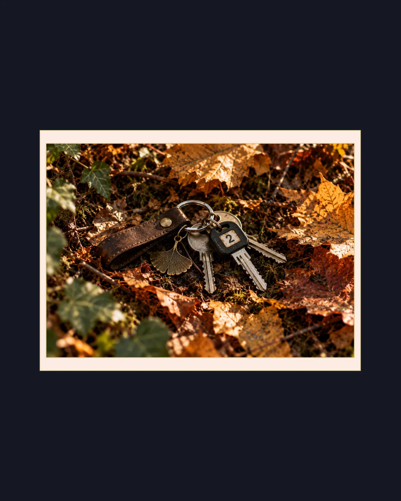
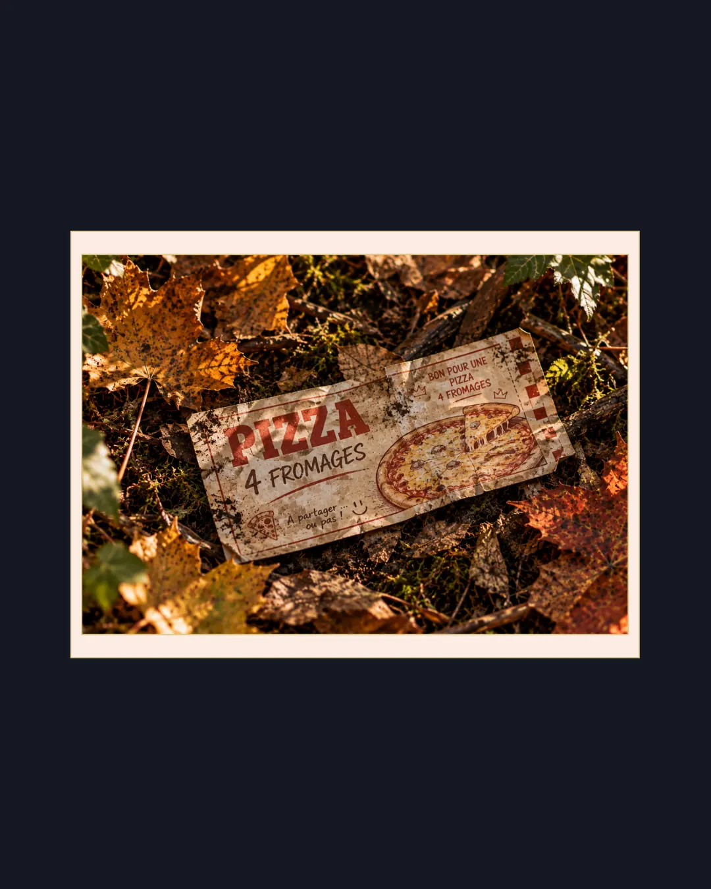
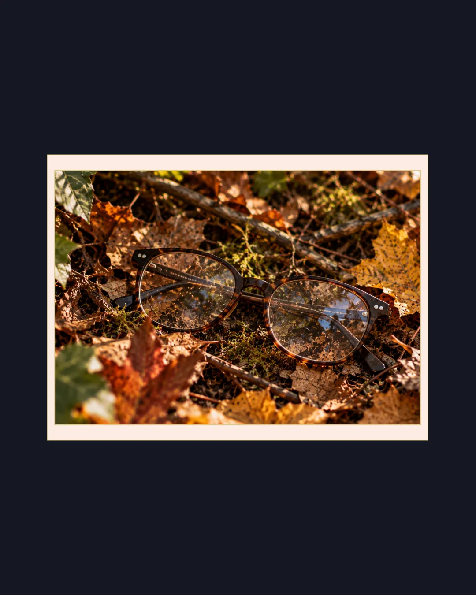
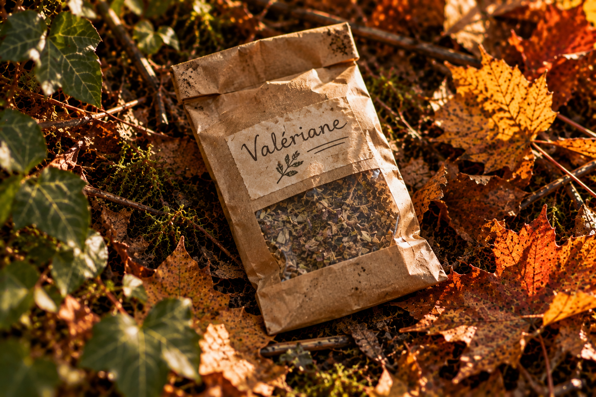
Certains objets portaient un chiffre. Dans l'ordre où vous les avez vus, ils forment un nombre à quatre chiffres. Notez-le : vous ne savez pas encore à quoi il sert.
Louis, botaniste au Parc Zoologique & Botanique de Mulhouse
Pour pénétrer dans la serre, entrez le code que vous avez trouvé un peu plus tôt.
Entrez dans la serre.
Vous êtes à deux doigts d'élucider le mystère.
La soirée d'Isabelle, vue de ses yeux
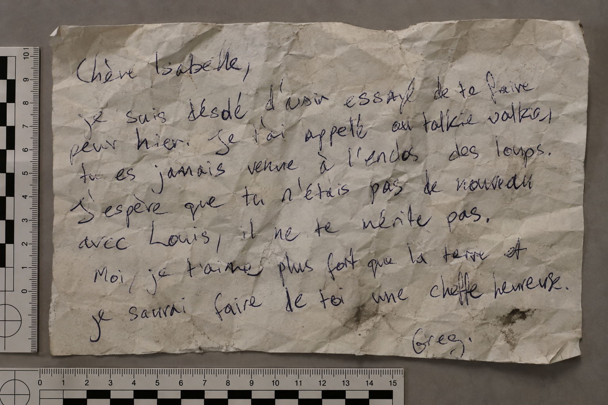
Une dernière pièce au dossier : la lettre de Greg.
C'est exactement cela. Isabelle a bu la tisane à la valériane de son collègue botaniste. Prise d'une grande fatigue, elle est retournée à la serre pour lui dire que le dosage était bien trop fort, et s'y est endormie. Personne n'a disparu, personne n'a été enlevé : elle dormait, à deux pas de tout le monde.
Vous tenez le bon fil : la tisane du botaniste est bien à l'origine de tout. Mais il n'a empoisonné personne. Le dosage de valériane était trop fort, Isabelle s'est sentie épuisée, elle est retournée à la serre pour le lui dire, et s'y est endormie. Une maladresse, pas un crime.
Ce n'est pas ce qui s'est passé. Personne ne lui a voulu de mal, et il ne lui est rien arrivé de grave. Elle a bu la tisane à la valériane du botaniste, dont le dosage était bien trop fort. Épuisée, elle est retournée à la serre pour l'avertir, et s'y est endormie. Elle dormait, à deux pas de vous, pendant que vous la cherchiez.
L'affaire est classée.
Pendant que vos visiteurs enquêtent, vous gardez la main, en direct, depuis votre téléphone.
Combien de groupes jouent, où en est chacun, qui est bloqué : tout se voit en temps réel, et chaque problème signalé par un joueur arrive aussitôt.
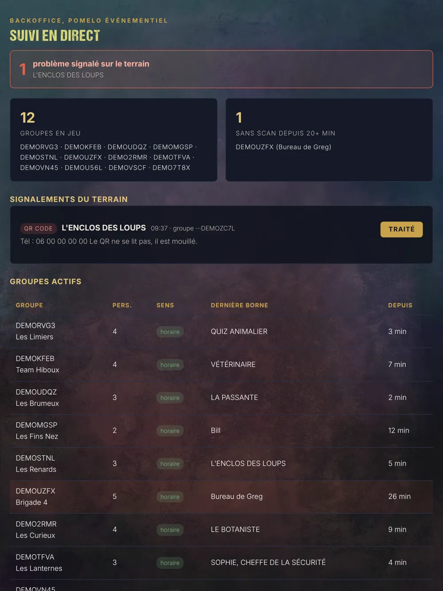
Fréquentation, temps passé à chaque étape, enquêtes terminées : vous suivez votre opération chiffres en main, jour après jour.
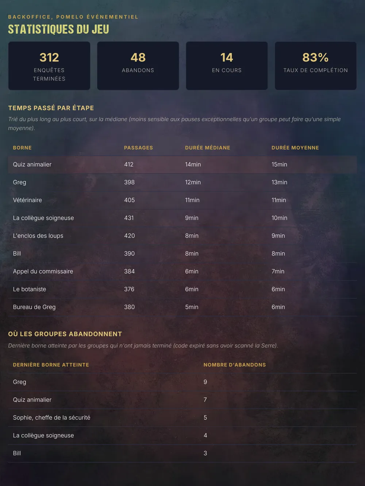
Captures avec des données fictives.
Votre lieu mérite son enquête.
Nous l'écrivons à partir de vos collections, de vos lieux et de vos histoires. Vous, vous récoltez :
« On n'a jamais autant visité le parc ! »Une joueuse du Sanctuaire des BrumesDécouvrir Pomelo